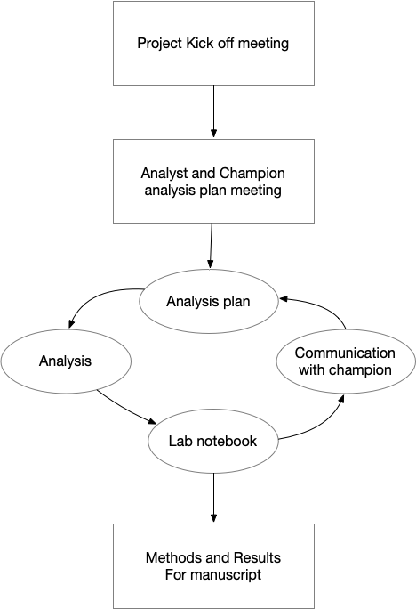

Analytic Workflow for Research Projects
A guide for data analyst in a research lab
This document describes the general workflow for data analysis projects in the MedLab. This a a workflow our lab and me have developed over 4 years of working in various of research projects.
Project steps overview

Step1: Project Kick off meeting
Every analysis project should have a kick off meeting. We follow the general idea of the paper print. In this meeting, the research team, including PI, champion and potential co-authors, should join and have a discussion about research design and research questions. For analysts, we need to understand and clarify the research background and questions, so we can have concrete ideas of the project complexity and feasibility. For example, if the data or the important covaraites are available.
Ideally, before the kick off meeting, the analyst should already be communicating with the project champion about research design plan. So the analyst can check the data availability and ask some clarifying questions before the kick-off meeting. This help the analyst to be more engaging in the kick off meeting.
If the analyst is already familiar with the data or research, it’s also helpful to have some descriptive data available in the kick off meeting. Just general table1 info, no need to run any models.
Step2: Set up analysis project
2.1 communication channels
Before we do analysis, it’s important to set up communication channels with the project champion. We usually have two separate ways. 1. working with internal team members, for example our research fellows in our lab 2. working with external collaborators, for example, people who are not familiar or don’t have access to our internal communication tools.
scenario 1: internal team.
Slack: very light weight communication. Things you never need to refer back in the future of the project. For example, I like to use slack to set up check-in meetings with the champion after each analysis iteration.
Asana: task specific communication Concrete task assignments should be documented on Asana. This is a place the project champion and the analyst should put the actual tasks we want to achieve. Ideally, we should put the “Done” criteria in the task so there is no misunderstandings.
Meetings: when we need to make a decision when we need to have deep discussion about the results and plan next steps based on the results what we currently have.
Email: only team-wise communication I don’t really don’t sent out team-wise emails.
scenario 2: external team.
external collaboration in analysis usually is small projects. I actually just use emails to communicate since every knows how to read emails. I don’t like to force external colloboraters to learn our lab’s system.
2.2 set up a project on cstar github
Our lab use GitKraken to commit code to our github page. We have a template repo on github. This template has pre-organized folders that are ideal for complicated projects. I usually start with the template when I know the projects can have multiple iterations. When doing a simple projects that don’t require multiple iterations, I just start an empty and add a few folders I see appropriate. see example.
When set up projects, take a few minutes to write down the project description in the About section on github. This could help the team to locate the project in the future (after months and years). If working on complicated projects, invest some time to fill in the ReadME on github repo. The ReadME template is with the template repo.
All the code and markdown documents should be pushed to the github project. But be careful that don’t push data to the github page.
2.2 set up a data folder
Data should be saved on Maize or Dropbox. If it’s medicare data, save on Maize. Other than Medicare data, we save data on UM Dropbox. Raw data and model results should not be save on github.
Use the same project name on github to name data folder, so it’s easier to find the corresponding data in the future for the projects. Every project should have it’s own data folder.
Step3: Analysis Plan
Before starting analysis, the analyst and project champion should already have good shared understandings of the research questions and plan. Document the analysis plan for each iteration on Asana where the team can easily have access to. The plan is developed in meetings between the analyst and project champion. Share the meeting summaries and action items on the Slack project channel. The analysis plan generally only needs to cover one sprint. Don’t overplan things. The next steps are based on the current available results. The analyst should feel free to add more beyond the plan during the analysis, but always cover the agreed upon items.
It’s important to set expectations between the project champion and analyst in the analysis plan phase. The project champion should give timely feedback to the analysis results. For example, in the analysis plan meeting, I usually would check the availability of the project champion and let them know what my workflow looks like. I usually update the results with them every week. I expect them to give me feedback of the results within 3 days. This is especially important in the beginning, because we want to make sure the analysis has met the expectations of the champion before we go too far. We should meet after each results so we can ask questions and plan for next sprint. If the project champion can’t be actively involved in the analysis, I usually won’t start the analysis until they have availability to be engaged with me. The switching cost of analysis is high if we have to pause and restart analysis often.
Step4: Analysis
Generally, the first round of analysis should be cohort definition and descriptive. Then we can move to model-based analysis and visualization.
The rule of thumb is to share results early and keep in touch with the project champion frequently. Don’t spend too much time to formatting, like fond or visualization etc. It’s better to share the work in progress results early with the project champion and have a meeting to go through the results first. In the meeting, the project champion should give feedback and ask clarifying questions regarding the results. The analyst can share the plan for next steps. This allows for faster iteration and more transparent communication. I usually would update the project champion every week. Even if you didn’t finish the analysis in a week, still offer to show the project champion with what you have and let them know the timeline of when you can finish.
4.1: Cohort Definition Diagram
Cohort definition should be the first thing to do. Make sure to spend time to think, communicate and document the cohort selection process is important. Re-definiing cohort later in the analysis process cost a lot time and effort. Cohort definition should be research theory driven instead of “results” driven. Looking at results to define cohort can lead to p-hacking.
I use DiagrammeR to create the cohort diagram in the CONSORT style. Here is an example code I have used for a project. The benefit of coding diagram is that it helps in multiple iterations scenario. No numbers are hard coded, so if we change our cohort, we don’t need to copy and paste numbers which can be very tedious and error-prone.
I don’t spend time making the diagram pretty, since it’s not easy to do detailed plot editing using DiagrammeR. I save the diagram in svg and edited the font in omnigraffle.
4.2: lab notbooks
Lab notebooks are used to communicate results with the Champion primarily. Notebooks don’t need to be too detailed since they are still work in progress products. It’s helpful to schedule meeting with the project champion to go through the results so everyone is on the same page. Also, by having meeting after the notebook results, we don’t have to write down every details of the model specs and interpretations. Explanations can be done in the meeting.
I generate HTML documents using Rmarkdown. Then, I create a lab notebook folder for each project under dropbox. So every team member can have access to the notebooks but still not publicly accessible. I don’t send html documents via email since the recipients have to download the documents in order to view. It’s easier to include dropbox inks in the email.
Lab notebooks can be rough in the beginning of the analysis, since the cohort and our analysis usually changes. Concentrating on faster iterations in the early stage is more important than having polished results. However, when the analyses are done, we should have good documents that the champion and the research team can refer back months down the road.
Step5: Finish Analysis
After the analysis is done, spend sometime to organize the code so that it’s easier to reference back in the future. I have used the R package targets to manage my analytic workflow.